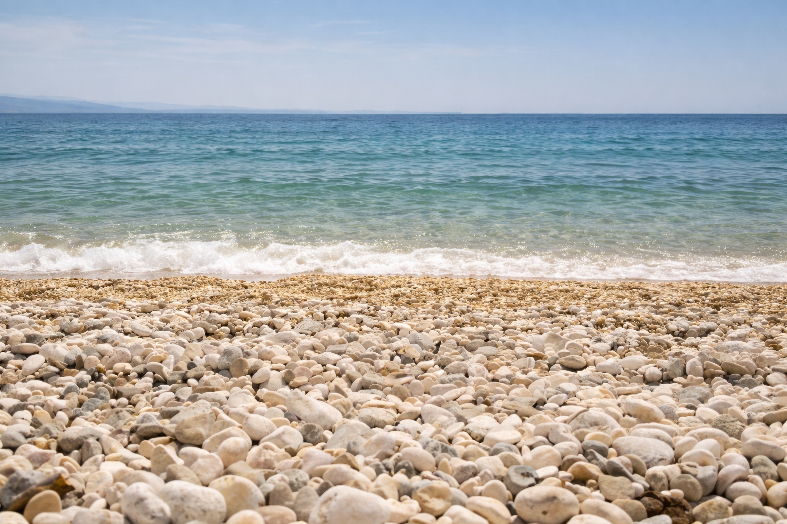

ОБРАБОТКА ФАЙЛОВ · ЛОКАЛЬНАЯ УТИЛИТА
Подготовка изображений после апскейла
Нормализация имён файлов и пакетная очистка метаданных с сохранением встроенного цветового профиля.

5 файлов → 5 готовых файлов

Рабочая локальная утилита. Проверка: 6 октября 2026 года.